40+ Years of Software Excellence
生成AI・ローカルLLM、半導体製造装置、組込み、Web、モバイルを横断できるエンジニア。要件定義から保守運用まで一貫して担当可能。
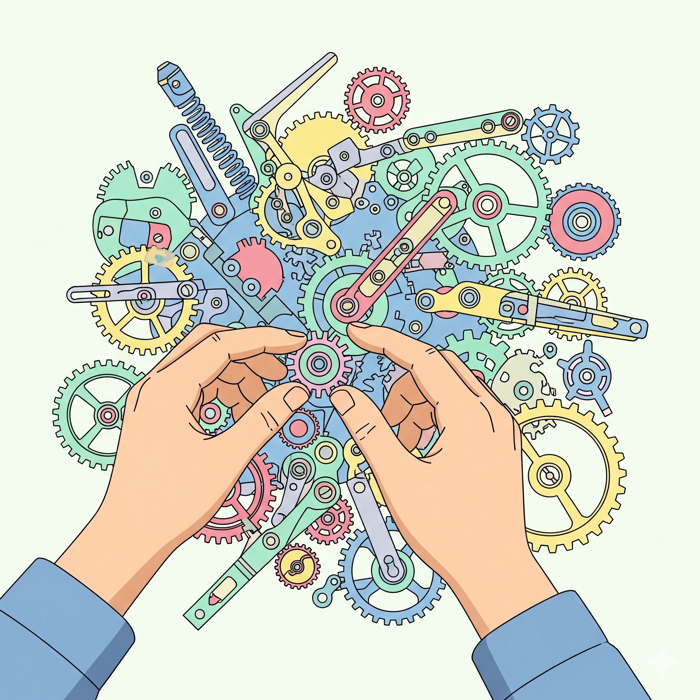
生成AI/ローカルLLM、半導体製造装置、組込み、Web、モバイルを横断できる40年以上経験
40年以上のソフトウェア開発経験を持ち、要件定義、基本設計、詳細設計、製造、単体テスト、結合テスト、総合テスト、保守運用まで一貫して担当可能。近年は生成AI、ローカルLLM/SLM、RAG、LoRA、ベクトル検索、音声AI、マルチモーダルAI基盤に注力。
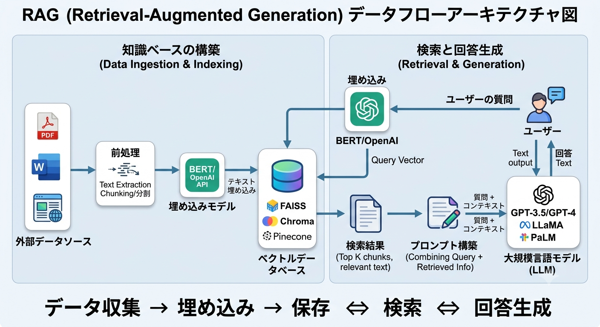
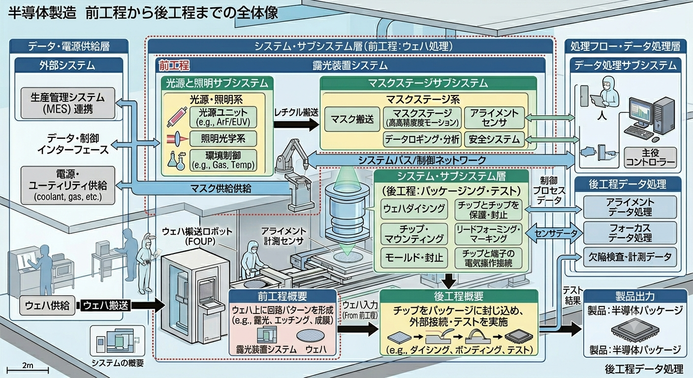
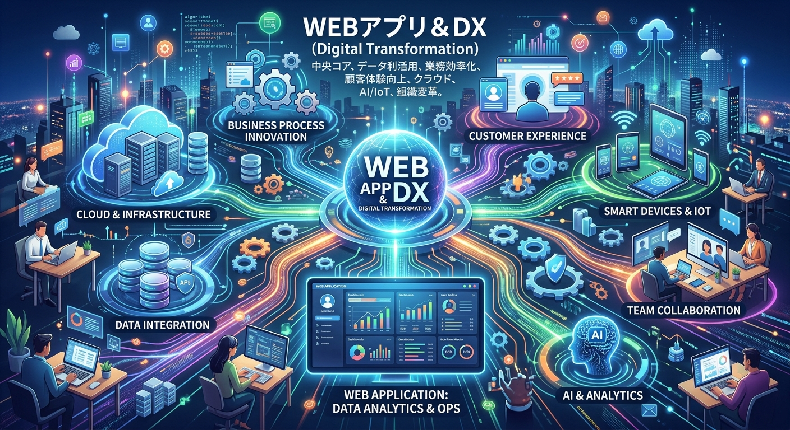
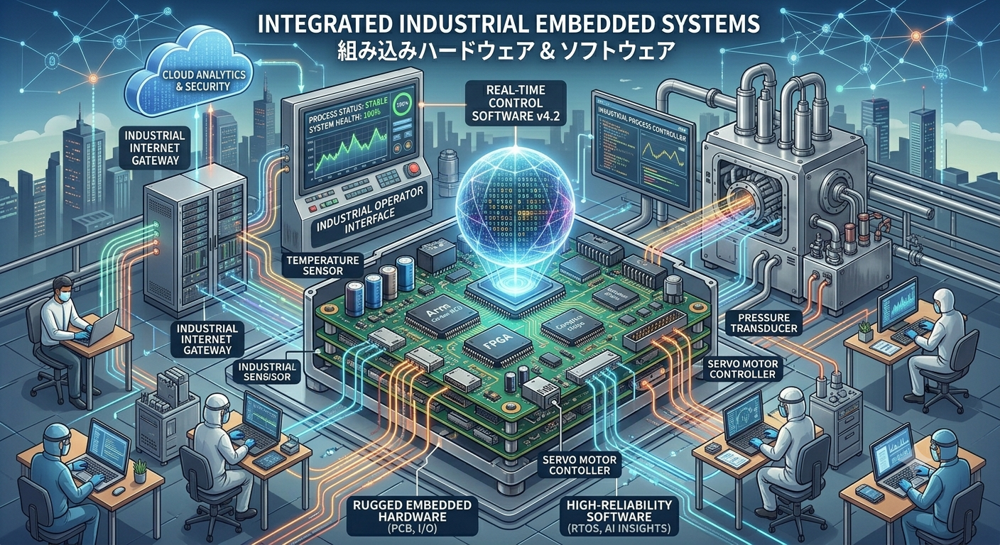
40年間のキャリアの中で手がけた主要プロジェクト
モデル選定、LoRA追加学習、RAG設計、ベクトル検索、プロンプト最適化、ハーネス設計、専用UI、STT/TTSによるマルチモーダルインタフェース。
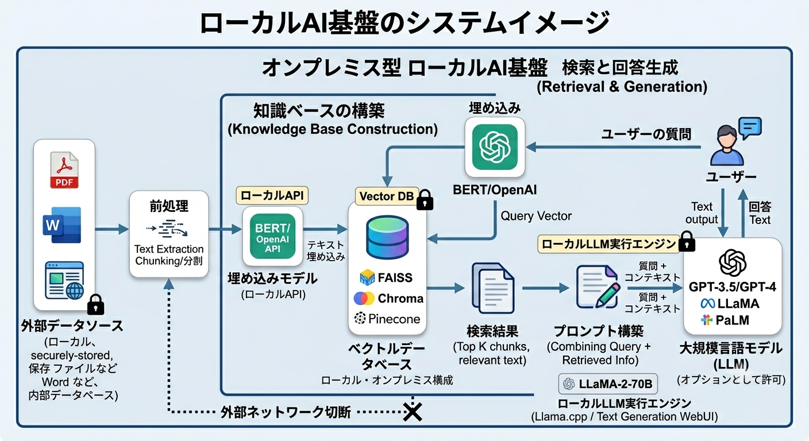
新規半導体製造工場向け工程管理・製品管理システム。SEMI/GEM、PMBOK、UML、RDRA2.0を用いた要件定義、基本設計。
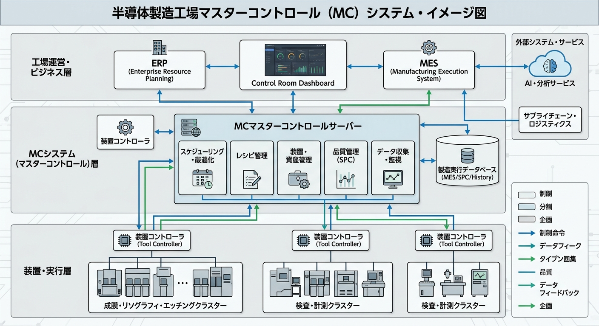
高セキュリティ環境でのLLM業務利用検証。LoRA、RAG、長期記憶システム、ワークベンチの開発。
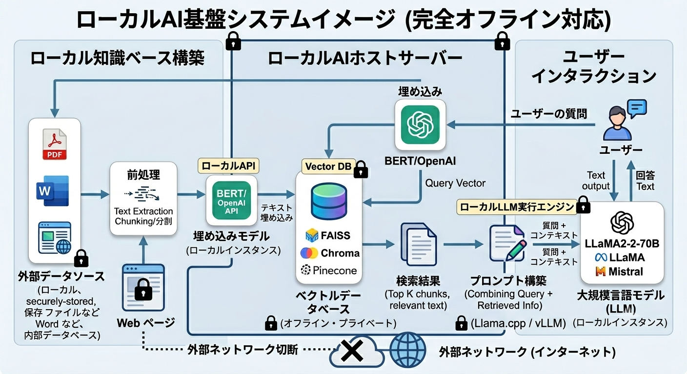
中規模以上の病院向け電子カルテ。HL7-FHIR、UI/UX検討、ワイアフレーム、法律・セキュリティ面のインフラ調査。
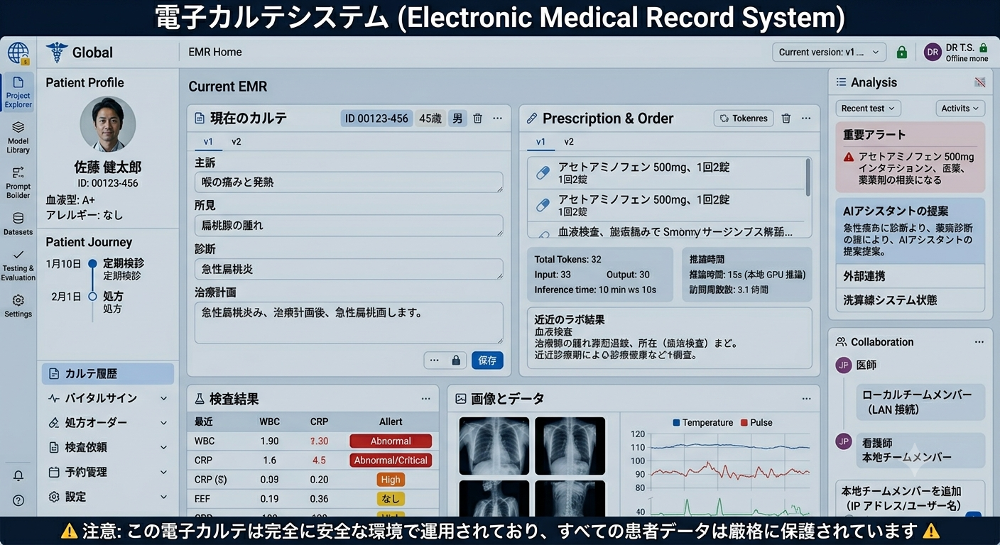
人材紹介・派遣会社のレガシーシステム刷新。Spring Boot、Thymeleaf、TypeScript、エンティティ自動作成ツール。
iBeaconを利用したAndroidアプリとSoC設計。商品情報自動表示、地図アプリ連携、閉鎖空間内ナビゲーション。
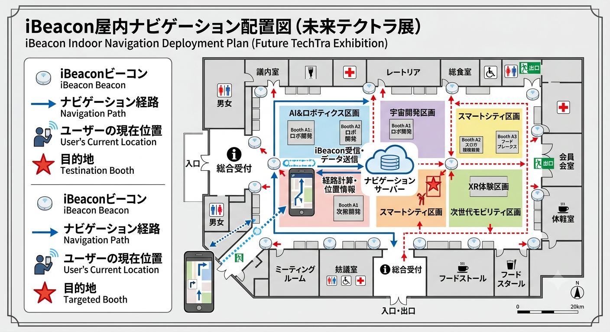
iOS/Android向け画像処理、音声認識、FFT、ウェーブレット変換、心音解析などの医療補助システム。
Windows/macOS/Linux対応のマルチプラットフォーム・フレームワーク。GUI、通信、画像処理、デバイスドライバ。
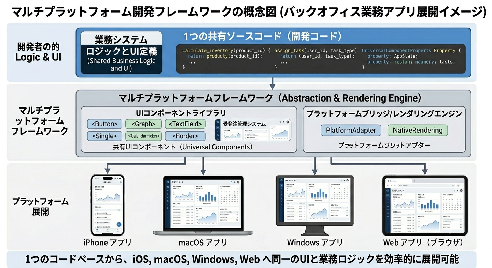
半導体露光装置の搬送制御、プロセス制御、画像処理、パターンマッチング、オートフォーカス、オートアライメント。
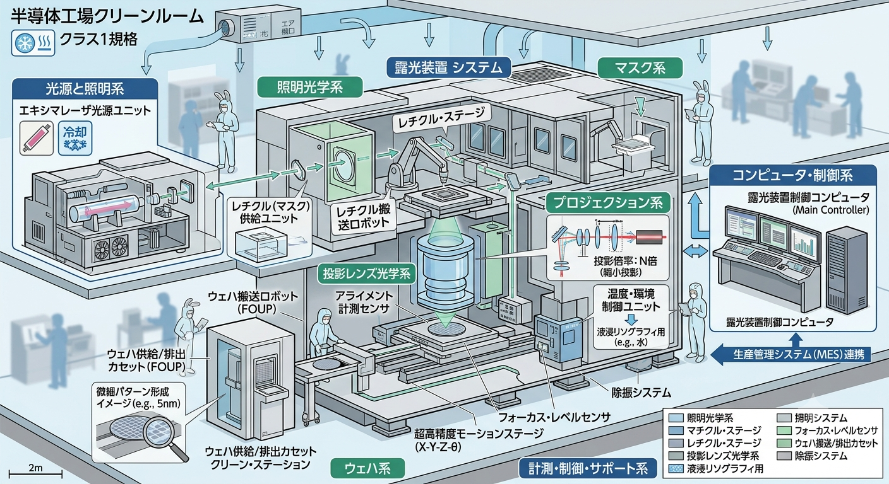
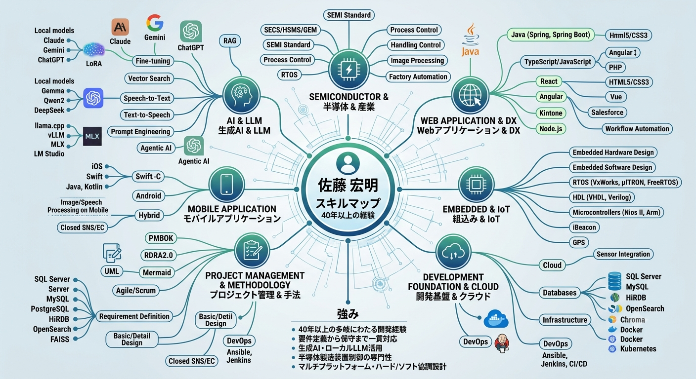
AI/LLM、半導体、Web、組込みなど多岐にわたるプロジェクトに従事
技術部の統括、営業部門のマネージメント
東京拠点の運営管理、プロジェクト遂行
マルチプラットフォーム・フレームワークを開発。現在も稼働する基盤に発展
半導体製造装置制御、組み込みシステム開発
半導体露光装置、GPSシステム、人工知能エンジン開発